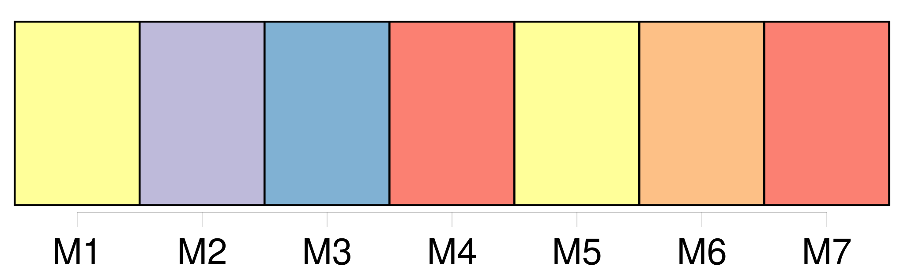
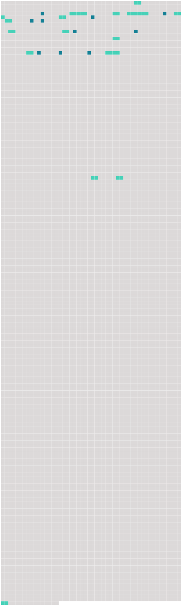

Longueur nb maillons : 25 mentions |
  |
Dans ces années molles où le dégoût, où l'impatience d'être des hommes montaient dans tous les corps comme des accès de fièvre, une force centrifuge irrésistible attirait les hommes les moins pesants de [l'Europe] loin de ce nombril de la terre qu'était peut-être Paris. [5 phrases] Pas de voyages en [Europe] : nous en étions venus à regarder [cette mince bande de territoires] , ce surjeon de l'Asie comme [un bloc] , comme [la masse de notre pays natal] On parlait d' [elle] comme d' [un être unique] , voué aux malheurs d'un unique destin : il y avait notre patrie, [l'Europe] , et nous. C'était d' [elle] qu'il était important de se débarrasser. Ailleurs reposaient les autres continent, chargés des forces, des vertus, des sagesses absentes de [notre province] Tout valait mieux qu' [elle] et qu' [elle] tout entière. [5 phrases] Franchissons donc les frontières de [cette presqu'île] limitée par des mers et les poteaux frontières de la Russie. Condamnons [cette taupinière] avec [ses] tas de scories. Les professeurs eux -mêmes, complices patients des poètes, parlaient de [son] déclin, les philosophes décrivaient la décadence de l'Occident. [2 phrases] Notre conclusion était vide, parce que l'on nous avait accoutumés à penser à l'Orient comme au contraire de l'Occident : alors au moment que la chute et la pourriture de [l'Europe] étaient des faits absolument simples et clairs et distincts, la renaissance et la floraison de l'Orient n'appartenaient pas moins à l'ordre des évidences. [6 phrases]
[L'Europe] avec [son] maigre compte de terres, [sa] pauvreté d'hommes et de pétrole, [sa] misère d'événements paraissait [une vieille femme agonisante] entre deux héros : l'Asie héros de la sagesse, l'Amérique, héros de la puissance. [57 phrases] La mer d'Irlande descendue, l'île de Lundy doublée, [l'Europe] tombe dans le sillage comme [une bouée] [207 phrases] Les marchands [d'Europe] qui séjournent dans les villes d'Orient n'y vont pas du tout. |
 |
La ressource peut être téléchargée sur la page Ortolang
Si vous avez des questions ou vous voyez des erreurs, merci d'envoyer un mail à silvia.federzoni89@gmail.com
Site développé par S. Federzoni (contact)